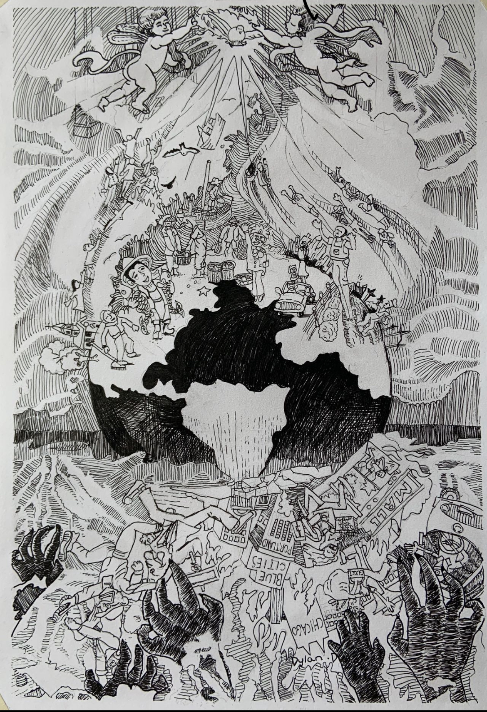
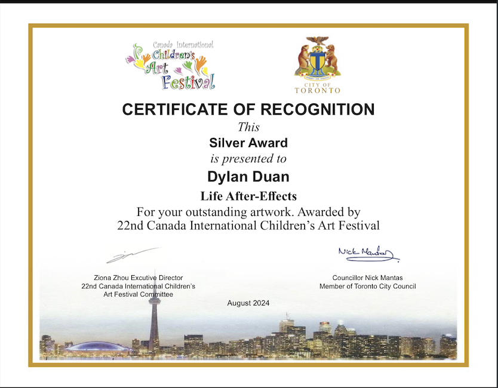
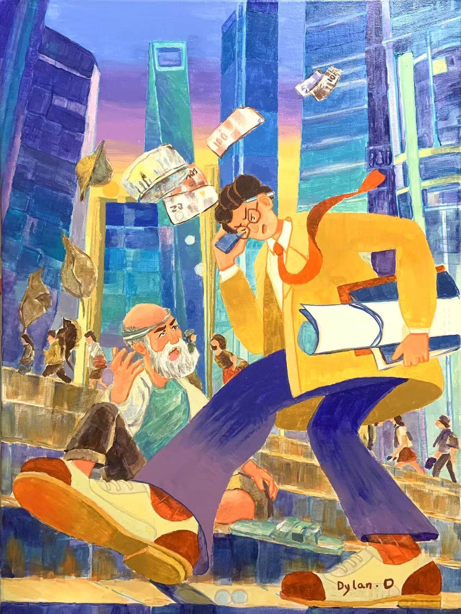
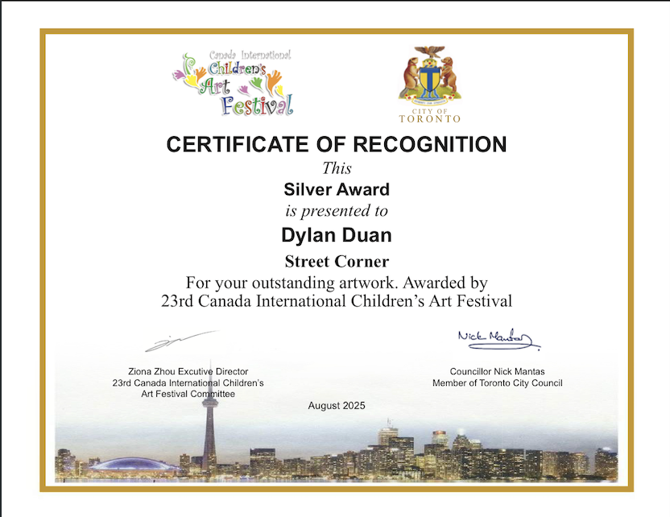
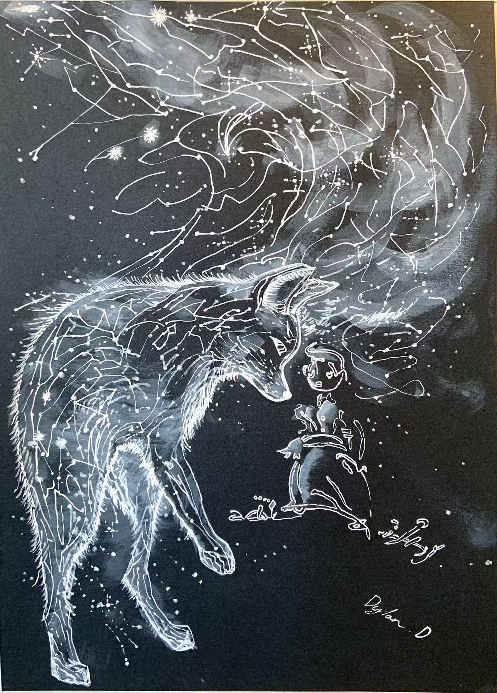
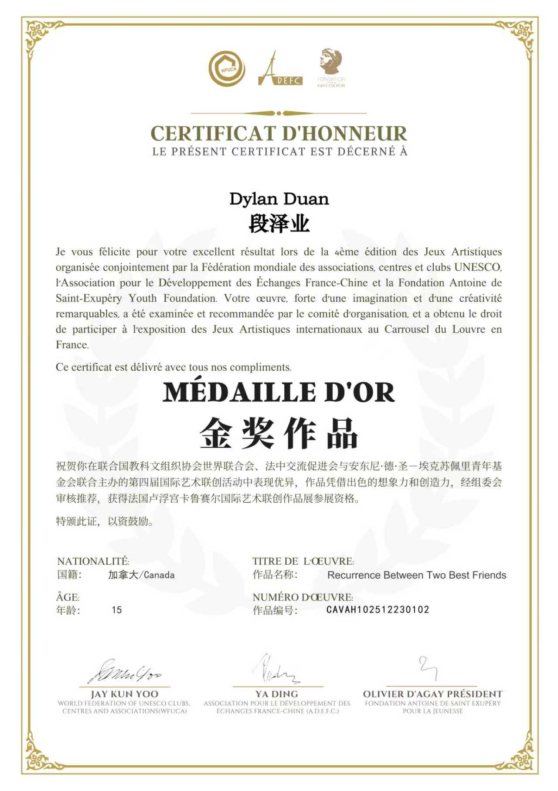
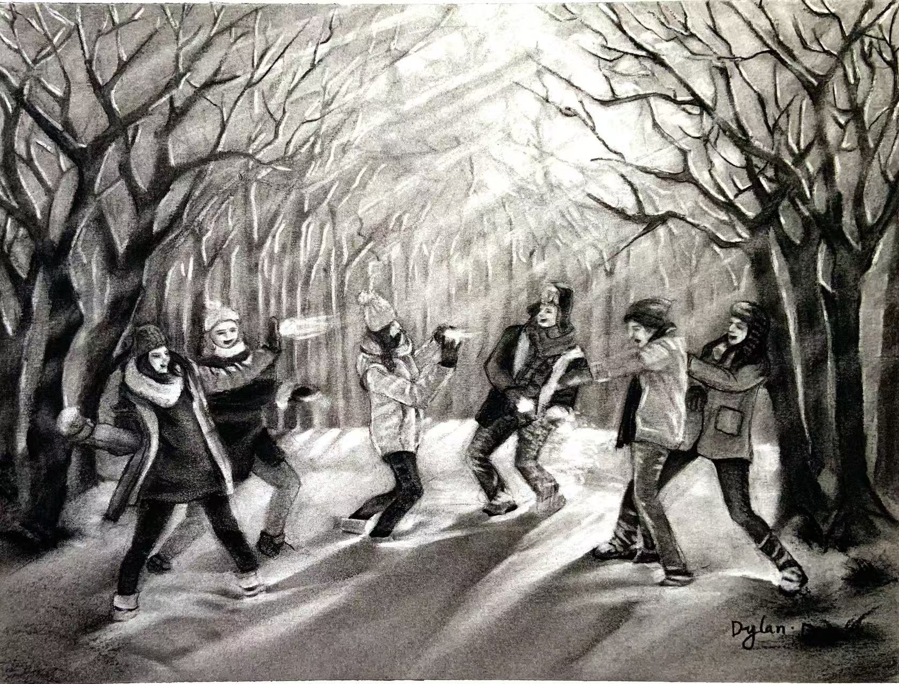
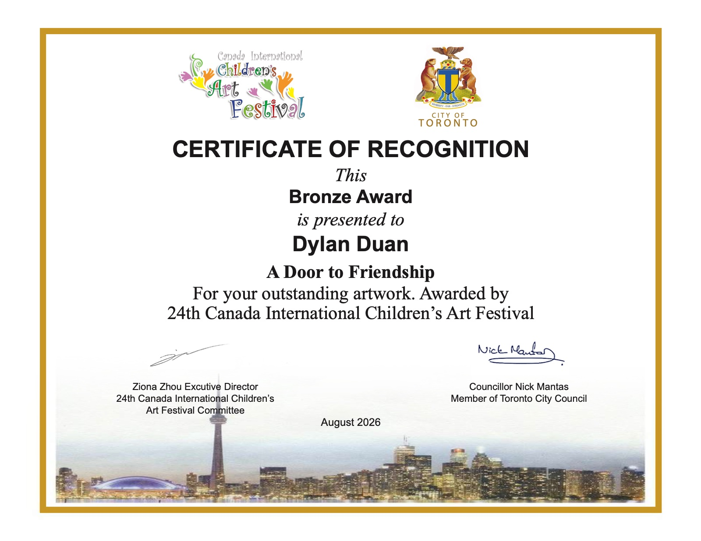
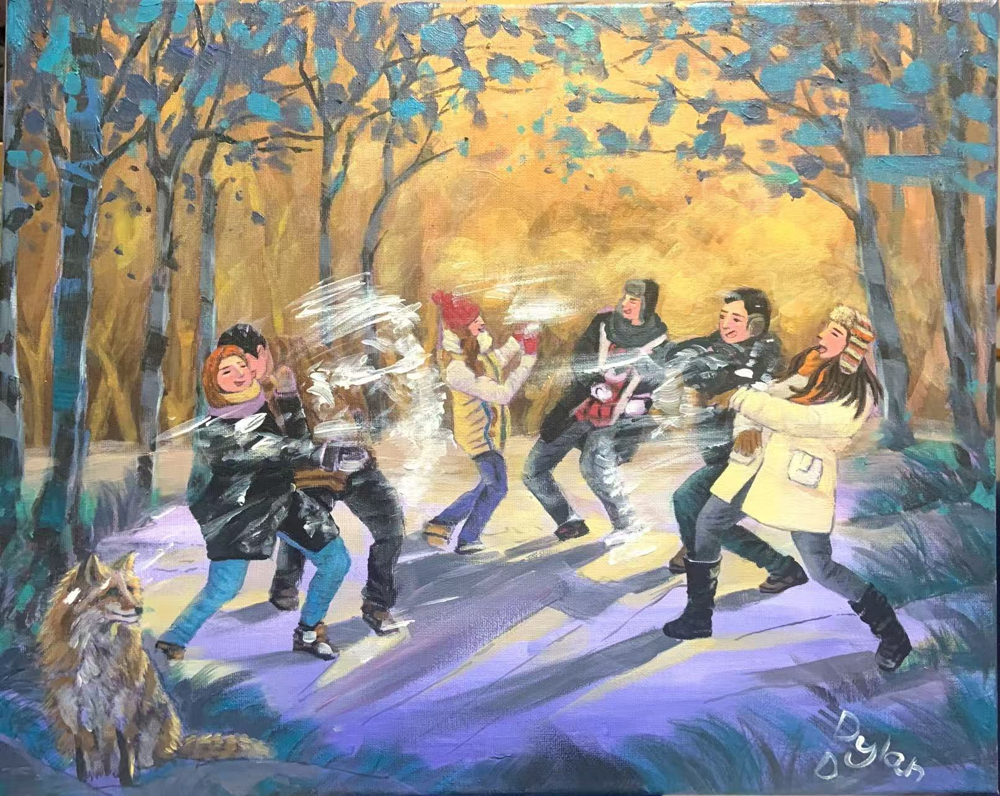
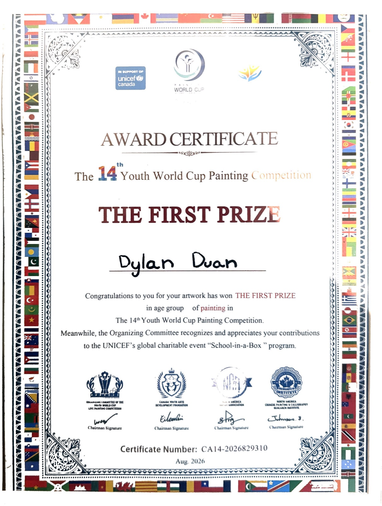

I work in ink, gouache, and mixed media, drawn equally to the quiet precision of intricate black-and-white compositions and the expansive energy of bold, luminous color. My practice moves between meticulous detail and vibrant expression, exploring the dialogue between restraint and abundance.

Pen & Ink · No Underdrawing
Drawn entirely freehand—without underdrawing, only pen and ink—this work imagines the beauty and disarray of an unraveled world. Figures descend through a landscape in perpetual motion, while the background unfolds in countless hidden details, inviting the eye to linger and discover something new with each return.


Gouache & Acrylic on Canvas
A quiet street corner at dusk, suspended in an ordinary moment. I wanted to capture the quiet contrasts of city life: some figures swept forward in urgency, papers scattered in their wake, while others pause to breathe. They inhabit the same place and the same instant, yet move through entirely different worlds.


White Ink & Gouache on Black Paper
White ink on black paper — a giant wolf made of stars facing a small person. Long-term friendships can feel so much bigger than us. It's about that deep, recurring connection that keeps coming back over years.


Charcoal & White on Paper
A snowball fight in the bleakest part of a Canadian winter. The trees are bare and the colour has drained from the world, yet pale sunlight breaks through the branches and stretches long shadows across the path. Friends duck, laugh, and pull each other close — proof that even the coldest season can open a door to warmth.


Acrylic on Canvas
The same winter afternoon, reimagined in full colour. Golden light pours through teal leaves, the snow turns violet in the shadows, and every snowball bursts into a bright streak mid-throw. In the corner, a quiet fox watches the game unfold. Returning to the scene let me ask what one moment feels like when joy is allowed to be loud.
